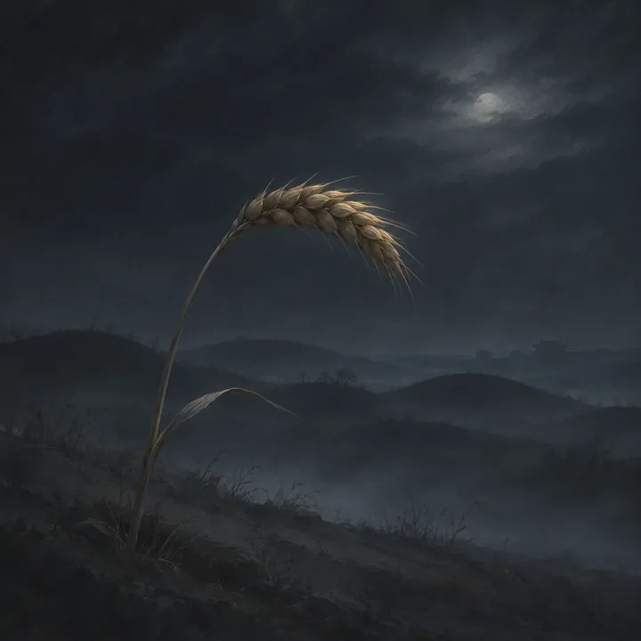

关于我
北邙无闲土 · 麦田有故人
北邙无闲土，
麦田有故人。
“北邙一穗”取“北邙无闲土”之意。白天写代码，晚上写故事。
相信好的游戏不需要堆砌系统，一个让人记住的选择，比一百个装备栏更有分量。做短视频也是一样，想把一个人、一次抉择讲清楚。
- 题材
- 战国历史
- 手段
- AI 出图、出片、配音
- 日常
- 白天写代码
晚上写故事
在做的事
主要做战国题材 · 用 AI 辅助创作短视频
名将、谋士、合纵连横。从人物立绘、分镜到配音配乐，把一段战国往事做成几分钟能看完的故事。
长平 · 合纵 · 变法 · 名将做游戏
把史书里的名场面变成玩法：长平的纸上谈兵、即墨的火牛阵、灭国之战里的取舍，都能亲手走一遍。
叙事 RPG · 动作小游戏谈工具
古装人物怎么出图不撞脸，战国场景的提示词怎么写，配音配乐怎么选，做历史内容踩过的坑都记下来。
出图 · 出片 · 配音 · 配乐作品
做过的两款小游戏 · 点开即玩
叙事 RPG · 约 70 分钟
秦灭六国
扮演秦军秘密行动头领北芒，与医者小满、剑士青翎共历战国末年。你决定的是方法与代价。
开始试玩 →
割草动作 · 约 2 分钟一局
横扫六国
选白起或孙膑一人对千军，手指拖着走、刀枪自动砍，最后迎战骑着竹简冲来的赵括。
开始试玩 →游戏戏说战国，非史实。源码在 GitHub。